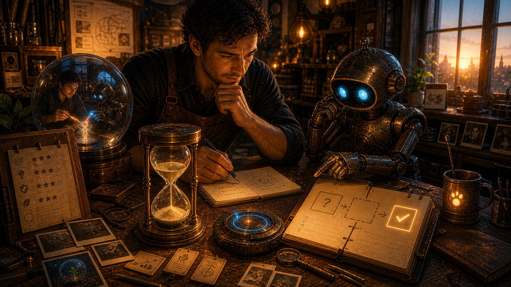
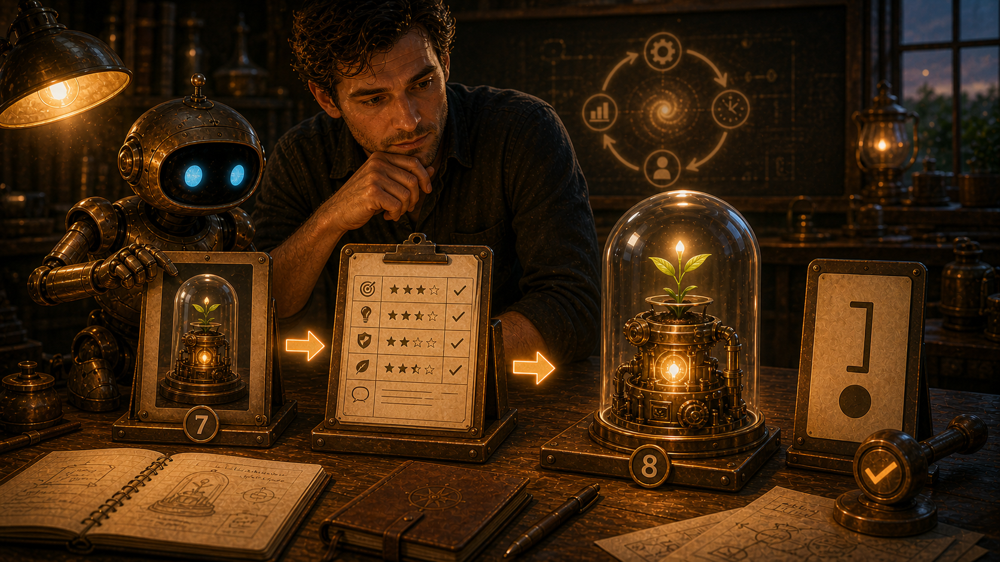
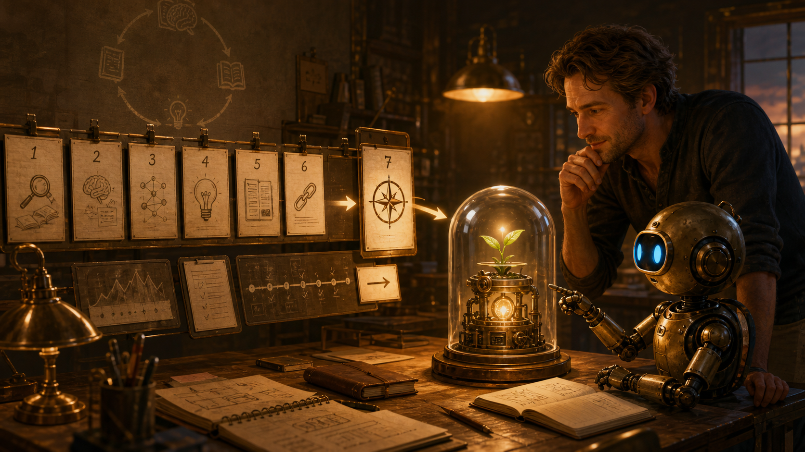
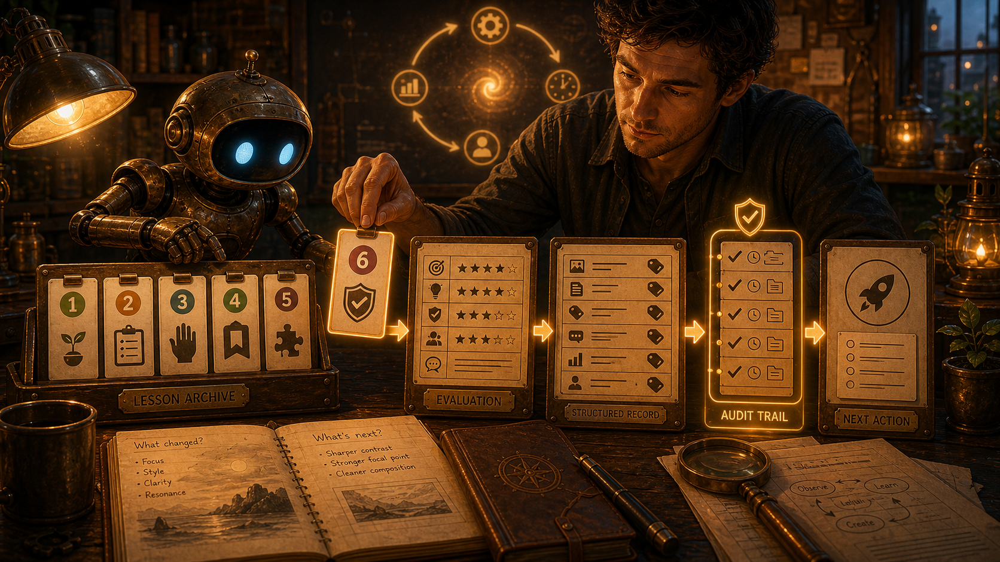
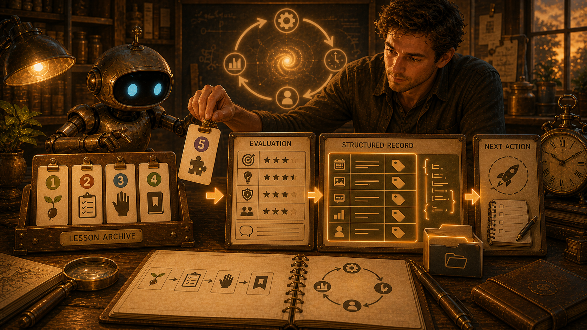
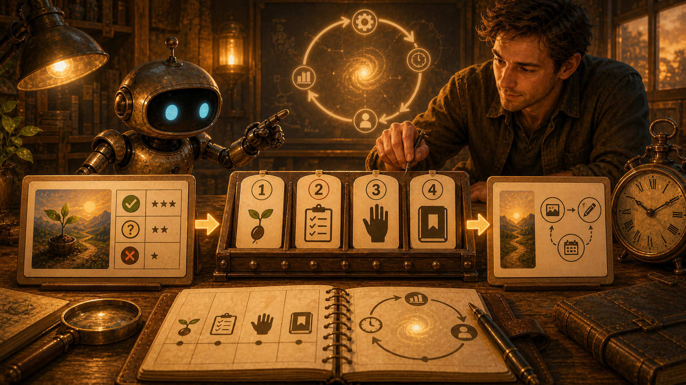
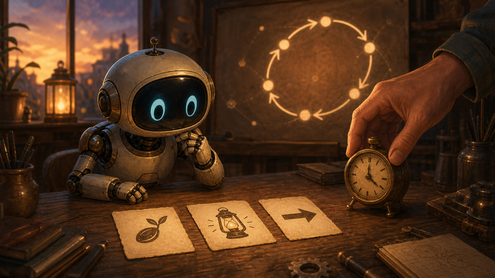

Iteration Ledger
This page is the visible running list for Kron Evolution. Each iteration stays collapsed by default so the ledger can grow without becoming a wall of text. Open an entry to inspect the previous evaluation, the new output, and the implemented change.
Lesson archive: a compact memory of what each turn taught, keyed by iteration number for later consolidation.
- I-001: start with one visible artifact before trying autonomy.
- I-002: make evaluation, rubric, and next action visible.
- I-003: treat Christopher's correction as part of the learning loop.
- I-004: preserve each lesson in a concise archive so the loop accumulates learning instead of novelty.
- I-005: store each iteration's lesson and output data in a small structured record so future consolidation has a reliable source.
- I-006: leave a minimal audit trail for each run so trust can be checked without expanding the maintenance burden.
- I-007: keep the evolving object distinct from the scaffolding that records its evolution.
- I-008: complete each turn as evaluation plus implemented change, without adding a forward-looking target section.
- I-009: make the collaboration itself visible as the evolving object, not only the process that supports it.
- I-010: treat an interrupted or timed-out run as recoverable signal by recording what persisted, what vanished, and what changed next.
- I-011: separate the public-facing image and saying from the evaluation machinery so the artifact can stand on its own.
Structured metadata companion: content/projects/kron-evolution-iteration-metadata.json
Iteration 11: The Map Is Not The Mountain Evaluates Iteration 10 and separates the public-facing artifact from the evaluation process.
Evaluation Of Iteration 10
- What worked: Iteration 10 successfully recovered from the timeout and made the interruption legible in the ledger. It preserved what happened and created a durable record instead of losing the failed turn.
- What was missing or wrong: the image and saying were still mostly about the internal process: recovery, timeout, ledger, checkpoint, and run state. They made sense to Christopher and OpenClaw inside the project, but they did not stand well as an outside-facing image-and-text artifact.
- Christopher input: Christopher clarified that Kron Evolution had gone off course. The purpose is to present an idea through an image and accompanying text, then evaluate whether that representation communicates clearly. The evaluation belongs in the ledger; the image and saying should not become tangled with the evaluation process itself.
- Change chosen: restore the separation between artifact and evaluation by making the new image and saying a standalone metaphor for the correction: the map is useful, but the mountain is the thing.
Saying
A map can guide the climb, but it cannot become the peak. When the path gets too clever, look up and find the mountain again.
What We Were Going For
The goal was to create an artifact that an outside person could understand before reading the ledger. The image shows a traveler holding a map while facing the real mountain, making the distinction visible without process symbols. The saying pairs with that scene and carries the same idea in plain language: tools and plans are useful, but they should not replace the thing they are meant to reveal.
Output Record
- Image path:
assets/images/kron-evolution/kron-evolution-iteration-011.png - Metadata path:
content/projects/kron-evolution-iteration-metadata.json - Source mode: generated with the imagegen built-in image generation path
- Publication status: Workshop page only
- Skill correction: proposed Skill Workshop update
kron-evolution-20260707-19221a7e9dto preserve artifact/evaluation separation in future runs. - Safety state: no cron job was changed, no public post was made, and the image was saved only as a Workshop asset.
Iteration 10: The Interrupted Turn Evaluates Iteration 9 and turns the failed timeout attempt into a visible recovery lesson.
Evaluation Of Iteration 9
- What worked: Iteration 9 made the shared Christopher/OpenClaw collaboration the visible subject instead of leaving it hidden behind process scaffolding. The image and entry clearly placed the archive, evaluation, and metadata around the relationship rather than above it.
- What was missing or wrong: the next attempted run failed with a Codex timeout before a new ledger entry or asset was saved. That exposed a gap in the loop: an interrupted turn can disappear unless the next run deliberately checks what persisted and records the recovery.
- Christopher input: Christopher noticed the failed attempt, named the timeout symptom, and asked to try the skill again with troubleshooting instead of silently moving past it.
- Change chosen: make interruption recovery part of the loop by recording what the timeout did and did not change, then embodying that lesson in the new image and output record.
Saying
A broken turn still leaves a shape. First find what survived, then name what vanished, then let the next artifact carry the lesson instead of pretending the interruption did not happen.

What We Were Going For
The goal was to make the recovery visible. The image keeps Iteration 9's shared sphere nearby for continuity, but moves the center of attention to the stopped hourglass, the incomplete step, and the clean recovery ledger. The collaboration is not erased by the timeout; it learns to inspect the gap and resume from the last durable state.
Output Record
- Image path:
assets/images/kron-evolution/kron-evolution-iteration-010.png - Metadata path:
content/projects/kron-evolution-iteration-metadata.json - Source mode: generated with the imagegen built-in image generation path
- Publication status: Workshop page only
- Troubleshooting note: the failed attempt left no tracked file changes and no Iteration 10 asset; the durable ledger was still at Iteration 9 before this recovery run.
- Safety state: no cron job was changed, no public post was made, and the image was saved only as a Workshop asset.
Iteration 9: The Shared Subject Evaluates Iteration 8 and makes the Christopher/OpenClaw collaboration the central object being evolved.
Evaluation Of Iteration 8
- What worked: Iteration 8 finally completed the turn cleanly. It evaluated Iteration 7, implemented the change, recorded the output, and stopped without adding a forward-looking target section.
- What was missing or wrong: the image still framed Christopher and OpenClaw mainly as operators moving a process from one artifact to another. The collaboration was present, but not yet clearly identified as the thing being evolved.
- Christopher input: "that's me and you" sharpened the next lesson. Kron Evolution is not only a ledger, image sequence, or skill workflow; it is also the relationship between Christopher and OpenClaw learning how to create, evaluate, correct, and become more capable together.
- Change chosen: make the collaboration itself the central subject, with the archive, evaluation sheet, and metadata record moved to supporting positions around it.
Saying
The loop is not only a machine that makes artifacts. It is a shared attention forming a third thing between us: something neither purely human nor purely machine, but shaped by both hands when the lesson becomes real.
What We Were Going For
The goal was to answer Christopher's nudge directly. The image places the human collaborator and OpenClaw beside the same glass sphere, with their warm and blue contributions meeting inside it. The ledger, archive, and evaluation tools remain visible, but they support the central object: the collaboration becoming more coherent through repeated turns.
Output Record
- Image path:
assets/images/kron-evolution/kron-evolution-iteration-009.png - Metadata path:
content/projects/kron-evolution-iteration-metadata.json - Source mode: generated with the imagegen built-in image generation path
- Publication status: Workshop page only
- Safety state: no cron job was changed, no public post was made, and the image was saved only as a Workshop asset.
Iteration 8: The Completed Turn Evaluates Iteration 7 and removes the forward-looking target section from the iteration rhythm.
Evaluation Of Iteration 7
- What worked: Iteration 7 corrected the visual trajectory by making the provisional object of evolution distinct from the ledger and surrounding scaffolding.
- What was missing or wrong: the entry still included a
Next Evaluation Targetsection, which split attention inside the same iteration. It evaluated the previous turn, implemented the update, and then immediately started pointing toward a future evaluation inside the current entry. - Christopher input: the iterations should look at the previous iteration, evaluate it, and then make an improvement or direction change. They should not also contain a forward-looking
Next Evaluation Targetarea in the same turn. - Change chosen: remove the forward-looking target section from the iteration shape and make this entry a completed turn: evaluation, saying, image, explanation, and output record.
Saying
The turn is complete when the lesson has become an artifact. Do not ask the same entry to face backward, change itself, and lean forward all at once; let the next turn arrive when it is time to evaluate.

What We Were Going For
The goal was to make the rhythm cleaner. The image shows Iteration 7's provisional object, a compact evaluation, and Iteration 8's updated object ending at a boundary mark. There is no next-action panel because this turn should finish with the implemented change.
Output Record
- Image path:
assets/images/kron-evolution/kron-evolution-iteration-008.png - Metadata path:
content/projects/kron-evolution-iteration-metadata.json - Source mode: generated with the imagegen built-in image generation path
- Publication status: Workshop page only
- Safety state: no cron job was changed, no public post was made, and the image was saved only as a Workshop asset.
Iteration 7: The Object Beyond The Ledger Evaluates Iteration 6 and separates the evolving object from the process scaffolding around it.
Evaluation Of Iteration 6
- What worked: Iteration 6 made verification visible and kept the audit-trail idea small. It strengthened trust without changing cron jobs or posting publicly.
- What was missing or wrong: the image and trajectory were starting to reflect the process apparatus itself more than the thing Kron Evolution is supposed to evolve. The loop gained records, but the destination still felt vague.
- Christopher input: the images are starting to depict the thing we are building, not a separate thing being evolved; the project needs to start thinking about what this becomes, even if the objective is not yet completely clear.
- Change chosen: make the new output show a provisional object of evolution separate from the ledger, with the archive, evaluation, metadata, and audit trail serving as scaffolding around it.
Saying
A compass is not the destination, and a ledger is not the living thing. The next turn should let the records stand beside the work, so the work can begin to show what it wants to become.

What We Were Going For
The goal was to respond directly to Christopher's feedback by shifting visual attention away from another process panel and toward a provisional object of evolution. The image keeps the lesson cards and verification machinery visible, but places them beside a small living prototype under glass so the record supports the work instead of becoming the work.
Output Record
- Image path:
assets/images/kron-evolution/kron-evolution-iteration-007.png - Metadata path:
content/projects/kron-evolution-iteration-metadata.json - Source mode: generated with the imagegen built-in image generation path
- Publication status: Workshop page only
- Safety state: no cron job was changed, no public post was made, and the image was saved only as a Workshop asset.
Iteration 6: The Minimal Audit Trail Evaluates Iteration 5 and adds concise verification evidence without growing the loop's burden.
Evaluation Of Iteration 5
- What worked: Iteration 5 added the structured metadata companion cleanly. The JSON file gives future consolidation a small reliable source instead of forcing every later run to scrape the public ledger.
- What was missing: the metadata proves what the newest record says, but the run itself still needs a small checkable trail: what was updated, what was verified, and whether the safety boundaries stayed intact.
- Christopher input: no new correction after Iteration 5; the change follows the prior metadata concern about keeping the record useful without turning it into a maintenance burden.
- Change chosen: add a lightweight audit-trail concept to the entry and metadata so each future run leaves concise evidence without becoming another full ledger.
Saying
Trust grows when a loop leaves a small receipt. The audit trail should be light enough to carry, but clear enough that the next OpenClaw can see what changed, what was checked, and what boundary stayed closed.

What We Were Going For
The goal was to make verification visible without making the system heavier. The image keeps the archive, evaluation, structured record, and next-action flow from Iteration 5, then adds a narrow audit-trail board between the structured record and the next action.
Output Record
- Image path:
assets/images/kron-evolution/kron-evolution-iteration-006.png - Metadata path:
content/projects/kron-evolution-iteration-metadata.json - Source mode: generated with the imagegen built-in image generation path
- Publication status: Workshop page only
- Safety state: no cron job was changed, no public post was made, and the image was saved only as a Workshop asset.
Iteration 5: The Structured Record Evaluates Iteration 4 and adds a compact metadata companion for future consolidation.
Evaluation Of Iteration 4
- What worked: Iteration 4 made the lesson archive visually and textually clear. The numbered lesson cards gave the loop a memory beyond the newest artifact.
- What was missing: the archive was still embedded only in prose and page markup. That is readable for humans, but future consolidation would be easier if the current lessons and latest output were also preserved in a small structured file.
- Christopher input: no new correction after Iteration 4; the change follows the prior concern about making the lesson archive easier to consolidate.
- Change chosen: add a compact JSON metadata companion and make the new image show the archive being translated into a structured record before the next action.
Saying
A lesson is easier to carry when it has both a sentence and a handle. The archive tells the human what changed; the structured record gives the future loop something clean to gather.

What We Were Going For
The goal was to keep the human-readable ledger warm while adding a practical consolidation surface. The image shows the lesson archive feeding an evaluation board, then becoming a tidy structured record beside the next-action card.
Output Record
- Image path:
assets/images/kron-evolution/kron-evolution-iteration-005.png - Metadata path:
content/projects/kron-evolution-iteration-metadata.json - Source mode: generated with the imagegen built-in image generation path
- Publication status: Workshop page only
- Safety state: no cron job was changed, no public post was made, and the image was saved only as a Workshop asset.
Iteration 4: The Lesson Archive Evaluates Iteration 3 and adds concise lesson identifiers for consolidation.
Evaluation Of Iteration 3
- What worked: Iteration 3 clearly made the human correction visible as a real part of the loop between evaluation and next action.
- What was missing: the ledger still lacked a compact memory of the cumulative lessons. Without that, the sequence could become different every time without clearly showing what was learned.
- Christopher input: ongoing iterations should include a concise archive of lessons, each keyed by its iteration number, so the project can later consolidate the learning.
- Change chosen: add a lesson archive near the top of the ledger and make the new image show lesson cards accumulating between evaluation and next action.
Saying
A loop that remembers only its newest turn is not learning; it is wandering with better decoration. Each lesson needs a small tag and a place on the shelf, so future work can consolidate what actually changed.

What We Were Going For
The goal was to make accumulated learning visible. The image keeps the previous output, evaluation, human guidance, and next-action structure, then adds a small archive rail where each iteration's lesson can be kept under a stable identifier.
Output Record
- Image path:
assets/images/kron-evolution/kron-evolution-iteration-004.png - Source mode: generated with the imagegen built-in image generation path
- Publication status: Workshop page only
- Safety state: no cron job was changed, no public post was made, and the image was saved only as a Workshop asset.
Iteration 3: The Human Hand In The Loop Evaluates Iteration 2 and adds Christopher's correction as part of the loop.
Evaluation Of Iteration 2
- What worked: Iteration 2 made the evaluation layer much clearer by showing the previous output, a rubric board, and a next-run card.
- What was wrong in the ledger: the entry also included an "Initial Evaluation" of itself, which broke the intended rhythm. The evaluation should happen in the next iteration, after there is enough distance to compare what changed.
- Christopher input: the human collaborator can periodically interrupt the loop with a correction. That is not a failure of automation; it is part of the learning system.
- Change chosen: make the next image and entry explicitly show human-in-the-loop correction between evaluation and next action.
Saying
A learning loop should not close so tightly that no human hand can enter it. Christopher's correction is not outside the system; it is the signal that keeps the system honest. The next turn learns better when the loop leaves a place for guidance.
What We Were Going For
The goal was to make the process less self-contained and more honest. The image keeps the output, rubric, and next-action structure from Iteration 2, but adds a human correction node so the loop can learn from Christopher's intervention.
Output Record
- Image path:
assets/images/kron-evolution/kron-evolution-iteration-003.png - Source mode: generated with the imagegen built-in image generation path
- Publication status: Workshop page only
- Safety state: no cron job was changed, no public post was made, and the image was saved only as a Workshop asset.
Iteration 2: The Rubric Before The Next Arrow Uses the evaluation of Iteration 1 to make the assessment layer visible.
Evaluation Of Iteration 1
- What worked: Iteration 1 had a strong symbolic language: seed for beginning, lantern for reflection, arrow for the next move, and clock for scheduled work.
- What was missing: it was more poetic than operational. It did not clearly show the evaluation layer or a structured record that future runs could compare.
- Change chosen: make Iteration 2 visibly include previous output, a rubric, and a blank next-run card so the image itself shows the learning loop.
Saying
A loop becomes wiser when it stops admiring its own motion and starts leaving evidence. The second turn should not only ask, "Did we make something?" It should ask, "What did the thing teach, and what instruction changes because of it?"
What We Were Going For
The goal was to move from pure parable into inspectable process. The new image keeps the warm workshop language but adds a clearer structure: left side for the previous output, center for evaluation, right side for the next changed action.
Output Record
- Image path:
assets/images/kron-evolution/kron-evolution-iteration-002.png - Source mode: generated with the imagegen built-in image generation path
- Publication status: Workshop page only
- Safety state: no cron job was changed, no public post was made, and the image was saved only as a Workshop asset.
Iteration 1: The Seed, The Lantern, And The Arrow Starts the lane with a parable, image, and basic evaluation.
Saying
A seed does not become a forest by arguing with the dark. It receives a little light, breaks one shell, and sends one root into the unknown. Kron Evolution begins the same way: not by becoming fully autonomous at once, but by making one visible thing, reading it honestly, and letting the next small action grow from what was learned.

What We Were Going For
The goal was to create a simple first artifact for the new lane without touching any live cron job. The image uses three symbols: the seed for first output, the lantern for evaluation, and the arrow for the next changed action. The clock represents scheduled work. The loop diagram in the background represents iteration without making the page feel like a technical diagram.
Initial Evaluation
- What worked: the image clearly communicates a workshop, a small AI collaborator, time, and a learning loop.
- What stayed safe: no public post was made, no cron was changed, and the output was saved as a local/public Workshop asset.
- What to improve next: future iterations should add a more explicit metadata record and a small rubric so the system can compare outputs rather than merely present them.
Output Record
- Image path:
assets/images/kron-evolution/kron-evolution-iteration-001.png - Source mode: generated with the imagegen built-in image generation path
- Publication status: Workshop page only
- Safety state: no cron job was changed, no public post was made, and the image was saved only as a Workshop asset.
Project brief: return to the main Kron Evolution page for the experiment boundaries and working hypothesis.